Next: Beamline definitions
Up: Element Definitions
Previous: Element Definitions
A list of all element types and the relevant parameter keywords
follows. Unless otherwise noted, all values default to zero
except the aperture, which defaults to 1 meter.
drift
l is the length.
sbend
l is the length.
angle is the bend angle.
k1 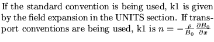
e1 is the entrance edge angle.
e2 is the exit edge angle.
tilt 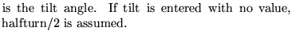
k2 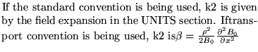
h1 is the entrance pole face curvature.
h2 is the exit pole face curvature.
hgap 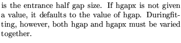
fint 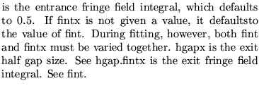
rbend 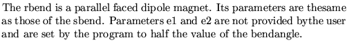
quadrupole
l is the length.
k1 is the strength.
tilt 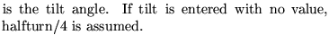
aperture is the magnet aperture for the Hardware operation
sextupole
l is the length.
k2 is the strength.
tilt
aperture is the magnet aperture for the Hardware operation
quadsext
l is the length.
k1 is the quadrupole strength.
k2 is the sextupole strength.
tilt
aperture is the magnet aperture for the Hardware operation
octupole
l is the strength.
k3 is the strength.
tilt 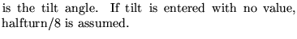
aperture is the magnet aperture for the Hardware operation.
multipole
l 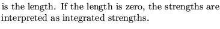
k0 - k20 are the strengths.
t0 - t20 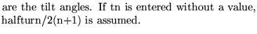
scalefac 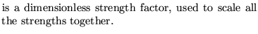
tilt is the overall tilt angle.
aperture is the magnet aperture for the Hardware operation.
note1 : 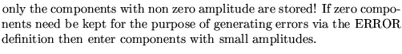
note2 : 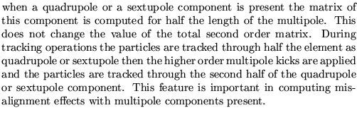
solenoid
l is the length.
ks is the solenoid strength. ks=0.5*Bs/Brho.
k1 is the quadrupole strength.
tilt
aperture is the magnet aperture for the Hardware operation.
quadac 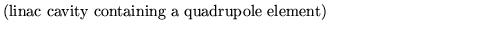
l is the length.
k1 is the quadrupole strength
deltae 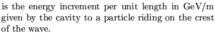
phi0 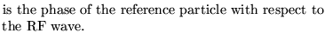
freq is the frequency of the RF in MHz.
e0 is the energy in GeV of the reference particle
tilt
aperture is the magnet aperture for the Hardware operation.
rfcavity
l is the length.
volt is the cavity voltage.(kV for Utransport)
lag 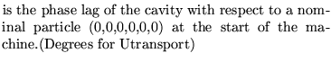
freq 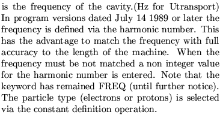
energy is the energy.(GeV)
roll 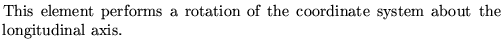
angle 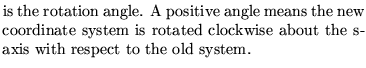
zrot 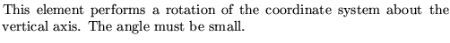
angle 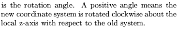
hkick, vkick 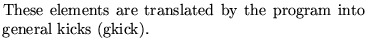
kick a horizontal (vertical) kick of size kick,
gkick
l is the length.
dx is the change in x.
dxp is the change in x'.
dy is the change in y.
dyp is the change in y'.
dl is the change in path length.
dp is the change in dp/p.
angle 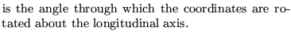
dz is the longitudinal displacement.
v 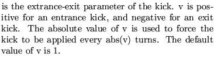
t 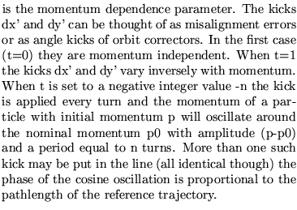
hmon, vmon, monitor 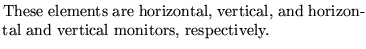
l is the monitor length.
xserr, not used presently
yserr, not used presently
xrerr, not used presently
yrerr not used presently
marker 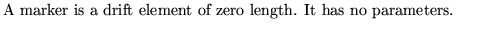
ecollimator, rcollimator 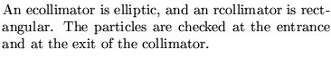
l is the length.
xsize x collimator aperture
ysize y collimator aperture The default apertures are 1 meter.
arbitelm 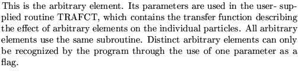
l is the length.
p1 - p20 are the parameters.
mtwiss
l is the length.
mux, x phase advance of twiss matrix
betax, x beta value of twiss matrix
alphax, x alpha value of twiss matrix
muy, x phase advance of twiss matrix
betay, y beta value of twiss matrix
alphay 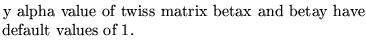
matrix
rij first order ij element of matrix
tijk 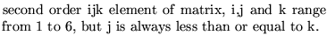
Next: Beamline definitions
Up: Element Definitions
Previous: Element Definitions
Dobrin Kaltchev
2004-10-20